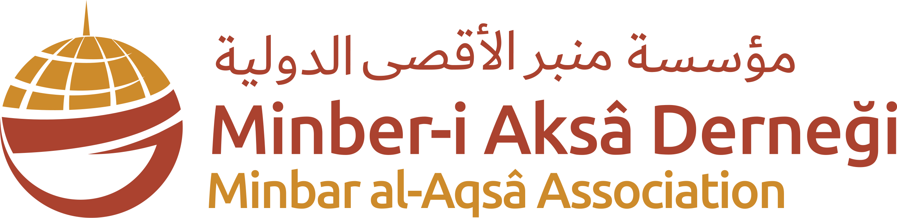

بسم الله الرحمن الرحيم{{ verse }}
{{ title }}
{{ nameLabel }}
{{ donorName }}
{{ body }}
{{ duaVerse }}
{{ duaText }}

{{ motto }}
{{ orgName }}

بسم الله الرحمن الرحيم{{ verse }}
{{ body }}
{{ duaVerse }}
{{ duaText }}